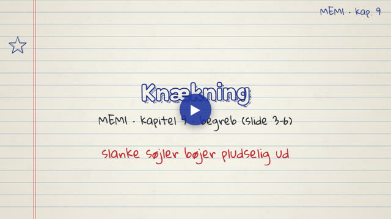
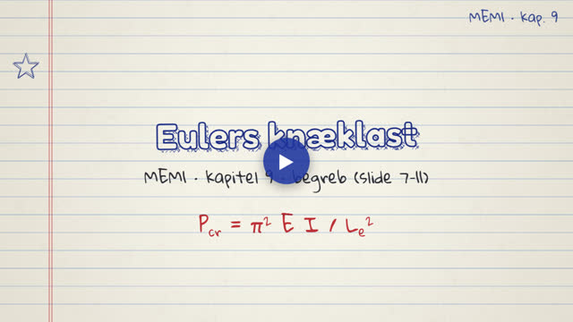
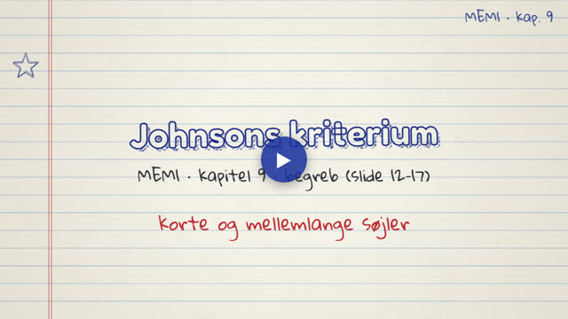
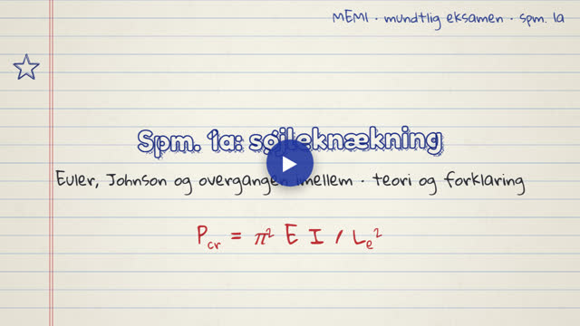
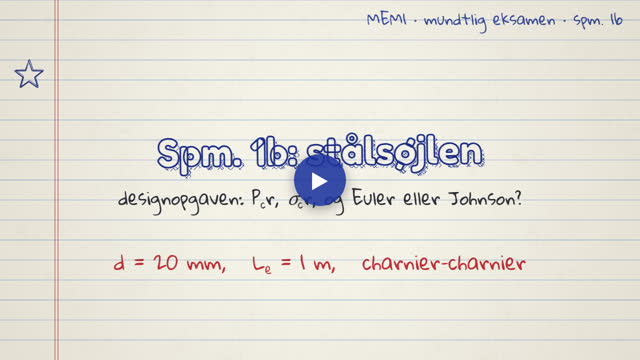

MEM1 · Søjler (knækning). Videoerne tegnes live i din browser og fylder næsten ingenting.
Ét begreb pr. video, i slidernes rækkefølge.

Knækning som instabilitet, stabil, neutral og ustabil ligevægt og den ideelle søjle.

Eulers formel, effektiv længde K·L, slankhed λ og udledningen med sin kx.

Johnsons parabel, overgangsslankheden λcr, AISC og excentrisk last.
Eksempler og eksamensopgaver fra kapitlet, trin for trin.
Del (a) teori og del (b) designopgave til det trukne spørgsmål, forklaret i dybden til 15-minutters eksamen.

Ny liste, spm. 1a: knækning som ustabilitet, Euler udledt, E, I og L_e, Johnson og overgangen ved S_y/2.

Ny liste, spm. 1b: P_cr = 15,5 kN, σ_cr = 49,3 MPa, L_e/k = 200 > 99,3, så Euler. Knækker ved 12 % af flydelasten.